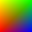

|
 oi1n0g16 - grayscale mother image with 1 idat-chunk oi1n0g16 - grayscale mother image with 1 idat-chunk
 oi1n2c16 - color mother image with 1 idat-chunk oi1n2c16 - color mother image with 1 idat-chunk
 oi2n0g16 - grayscale image with 2 idat-chunks oi2n0g16 - grayscale image with 2 idat-chunks
 oi2n2c16 - color image with 2 idat-chunks oi2n2c16 - color image with 2 idat-chunks
 oi4n0g16 - grayscale image with 4 unequal sized idat-chunks oi4n0g16 - grayscale image with 4 unequal sized idat-chunks
 oi4n2c16 - color image with 4 unequal sized idat-chunks oi4n2c16 - color image with 4 unequal sized idat-chunks
 oi9n0g16 - grayscale image with all idat-chunks length one oi9n0g16 - grayscale image with all idat-chunks length one
 oi9n2c16 - color image with all idat-chunks length one
|
 Willem van Schaik, Singapore, March 1998
Willem van Schaik, Singapore, March 1998